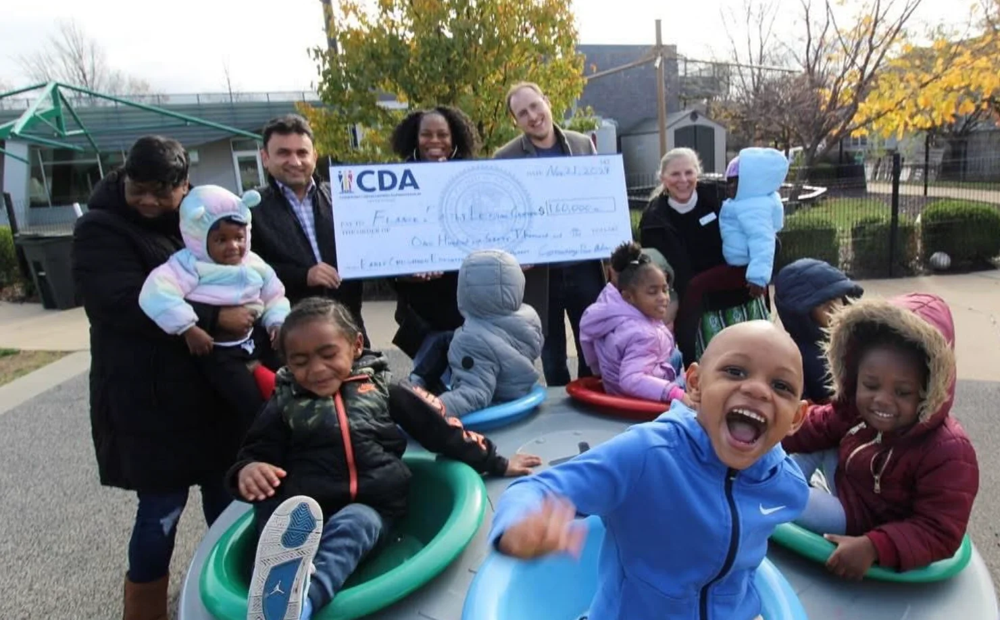
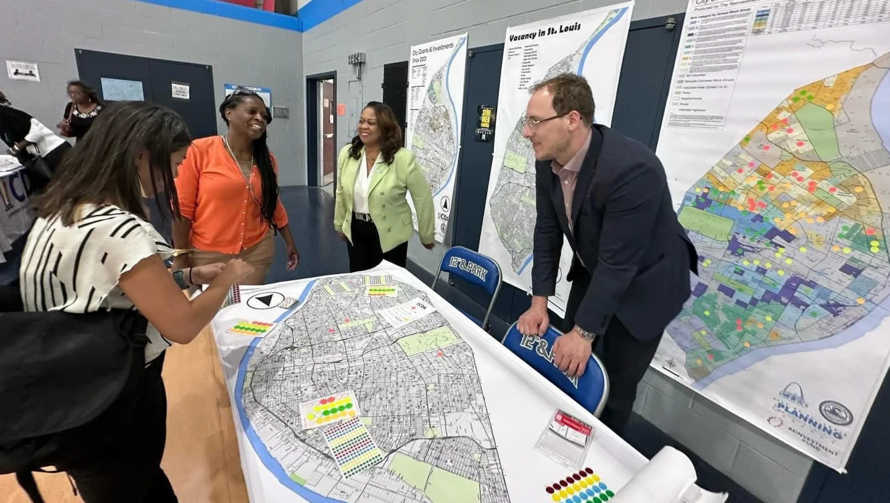
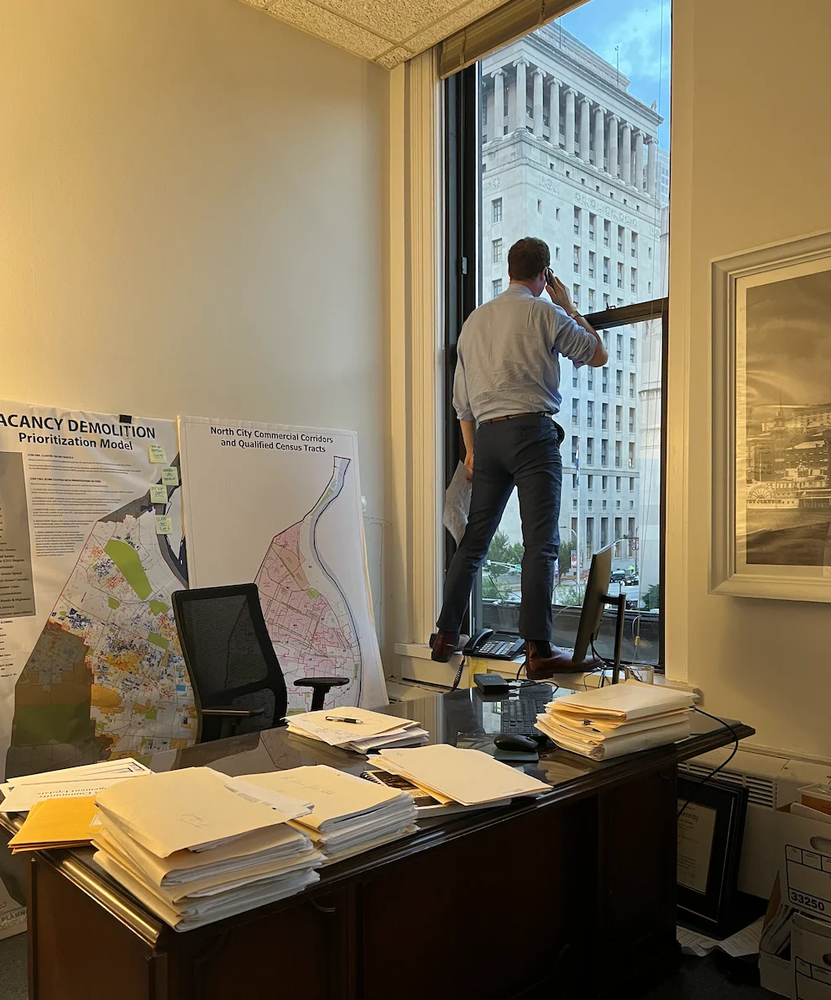
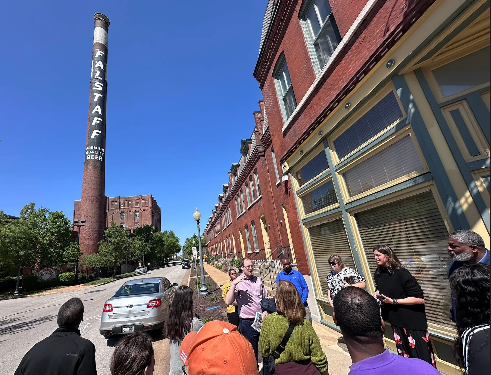

A visual collection of community development work, public presentations, and engagement across St. Louis.

CDA playground investment - celebrating with community members and partners

Press conference on community development initiatives
Engaging with community members on vacancy strategy and neighborhood planning

Presenting on capacity building funding opportunities for nonprofits

At work in City Hall, managing community development projects and policy

Leading site visit and community tour of historic St. Louis neighborhoods
Public Presentations & Speaking
I regularly present at public hearings, community meetings, conferences, and academic settings on topics including:
- Community development best practices
- Tax incentive policy and reform
- Affordable housing strategies
- Vacancy reduction and land reuse
- Federal community development programs (CDBG, HOME, etc.)
- Public-private partnerships
- Equitable development
Media Coverage
Links to media coverage, interviews, and press releases will be added here. If you have specific articles or videos you'd like to feature, please share them.
Documents & Reports
Key reports and documents I've authored or contributed to:
PDFs and links to reports can be added here. Please share any documents you'd like to make available for download or viewing.